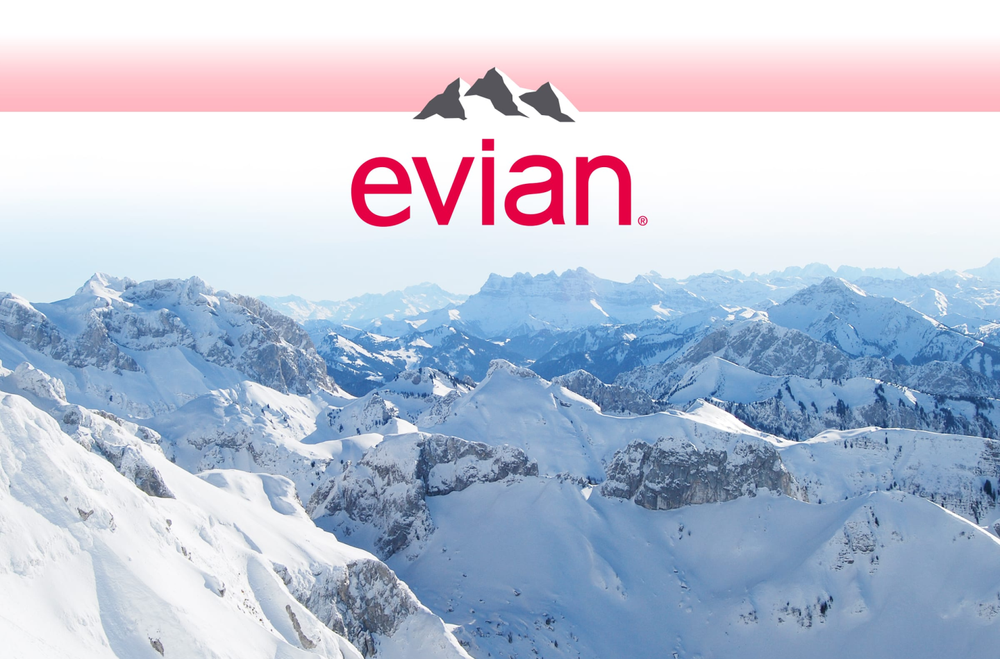

evian
- Link 1
- Link 2
- Link 3

Glass Limited Edition

Alexander Wang 2016 750 mL

Christian Lacroix 2017 750 mL

Chiara Ferragni 2018 750 mL
Alexander Wang 2016 750 mL
Christian Lacroix 2017 750 mL
Chiara Ferragni 2018 750 mL